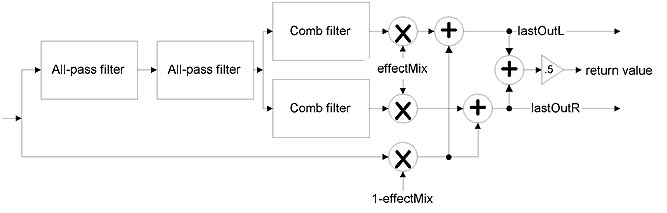

The diagram of the reverberation network is as followed:
There are several reasons to use bandwidth control here.
To address the above issues in a realtime process actor, we choose to use a bandpass filter with 0 gain at DC and half sampling frequency to preprocess the signal to be reverberated. Such frequency response satisfies all the requirements above. A 2nd order IIR filter is used for the purpose, its I/O function, transfer function, zero/pole distribution and frequency response is shown in the following graph.
As Z-plane zero/pole distribution of the filter tells us, the two zeros at 1 and -1 force the frequency response at 0 and fs/2 to be zero. The maximum frequency response is always 2 regardless of the position of the pole, however that position determines the frequency at which the response maximum occurs. It follows from straightforward derivation that the "center frequency" and the pole has the following relationship: cos(2*PI*fc/fs) = pole. Some pairs of fc and pole values are given below, with fs = 22,050Hz:
| pole |
0.543 |
0.285 |
0.146 |
0 |
-0.138 |
-0.411 |
|
fc (Hz) |
3.5K |
4.5K |
5K |
5,513 (fs/4) |
6K |
7K |
The closer the pole is to 1, the lower center frequency will be. When
the pole is at 1, it cancels out with the zero, thus reducing the filter
to 1st order FIR, which is not allowed. Similar discussion holds for negative
pole position. When the pole is at origin, the IIR filter turns into a
2nd order FIR filter. Positive pole is preferable, because then the response
peak is set in low frequency range to make the sound "warm".
But pole > 0.5 leads to distorted output because of the unlinearality
at low frequency is too sharp. Same thing happens when pole < -0.5.
For some more information about filter, please consult Filter Actor documentation.
Reflections during about 20~80ms after sound is triggered are heard together with the direct sound as one single auditory event. An FIR filter is used to generate these early reflections.
Comb filters are used to imitate both time and frequency responses of
enclosure reverberation. In time domain, comb filter produces exponentially
decaying echoes of input. In frequency domain, the comb-shape frequency
response resembles the natural modes of enclosure. The problem with comb
filter is that the distances between adjacent echoes and frequency modes
are decided by the single parameter of delay. Bigger delay leads to more
scattered echoes and closer frequency modes, and vice versa, while the
enclosure reverberation yields both dense echoes and close frequency modes.
Because dense echoes can be achieved by all-pass filters in the next stage,
and distant frequency modes yield unpleasant metallic sound, the comb filter
delays should be set in the range of 50~80ms.
Output of one comb filter has very distinct periodicity which is called
"flutter". This can been seen from its impulse response, or heard
by setting the reverberator to have only one comb filter. To avoid the
periodicity, several comb filters with delays in prime number can be paralleled.
The frequency response of paralleled comb filters will be the sum of the
individuals, imitating the overlap of natural modes of enclosure.
The reverberation time is decided by delay and gain.
The standard measure of reverberation time is t60, the time at which
reverberation level falls to -60dB or one thousands of the initial sound.
Another character of room and hall is that t60 is frequency-dependent. The t60-frequency curve is fairly complicated and distinct for individual enclosure, but the general shape is low-pass. The same 1st order IIR filter for bandwidth control can be added into the feedback loop of the comb filter to produce a smooth low-pass t60-frequency response. Given the ratio of t60(0) / t60(fs/2) (set by damp ratio), delay, loop gain and low-pass gain can be calculated.
The name "all-pass" comes from its constant frequency response. But its phase response is quite complex, and the group delay is in comb shape. All-pass filter along can make pretty decent reverberatino because of the dispersive phase response. Here, they are used to increase echo density. The impulse response is similar to that of comb filter, so a small delay, e.g. 6ms can make very dense echoes, while no "color" is added into the sound as by the comb filter, because of the constant frequency response.
A 1st order IIR filter is used to low-pass the reverberation to reduce the high-frequency ringing generated by comb filters. A single parameter BW is used to control the frequency response of the filter, thus the "brightness" of the reverberation. Frequency response at DC is always 1, and BW/(2-BW) at fs/2. Thus the bigger BW, the wider frequency band is passed through.
Perry Cook's STK reverberator

Salute! The algorithm implementation and program structure of STK reverberator was shameless copied to reverberator actor design.
Problems: